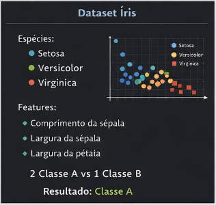
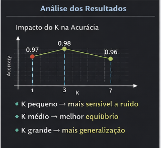

Dataset Íris

Classificação Supervisionada
from sklearn.datasets import load_iris
from sklearn.model_selection import train_test_split
from sklearn.neighbors import KNeighborsClassifier
from sklearn.metrics import accuracy_score
# carregar dataset
iris = load_iris()
X = iris.data
y = iris.target
# dividir treino e teste
X_train, X_test, y_train, y_test = train_test_split( X, y, test_size=0.2, random_state=42 )
# cria 3 modelos com parâmetros diferentes
modelos = { "K=1": KNeighborsClassifier(n_neighbors=1),
"K=3": KNeighborsClassifier(n_neighbors=3),
"K=7": KNeighborsClassifier(n_neighbors=7),}
# treina e avalia resultados = {}
for nome, modelo in modelos.items():
modelo.fit(X_train, y_train)
y_pred = modelo.predict(X_test)
acc = accuracy_score(y_test, y_pred)
resultados[nome] = acc
# mostra resultados
for nome, acc in resultados.items():
print(f"{nome} -> Acurácia: {acc:.2f}")
